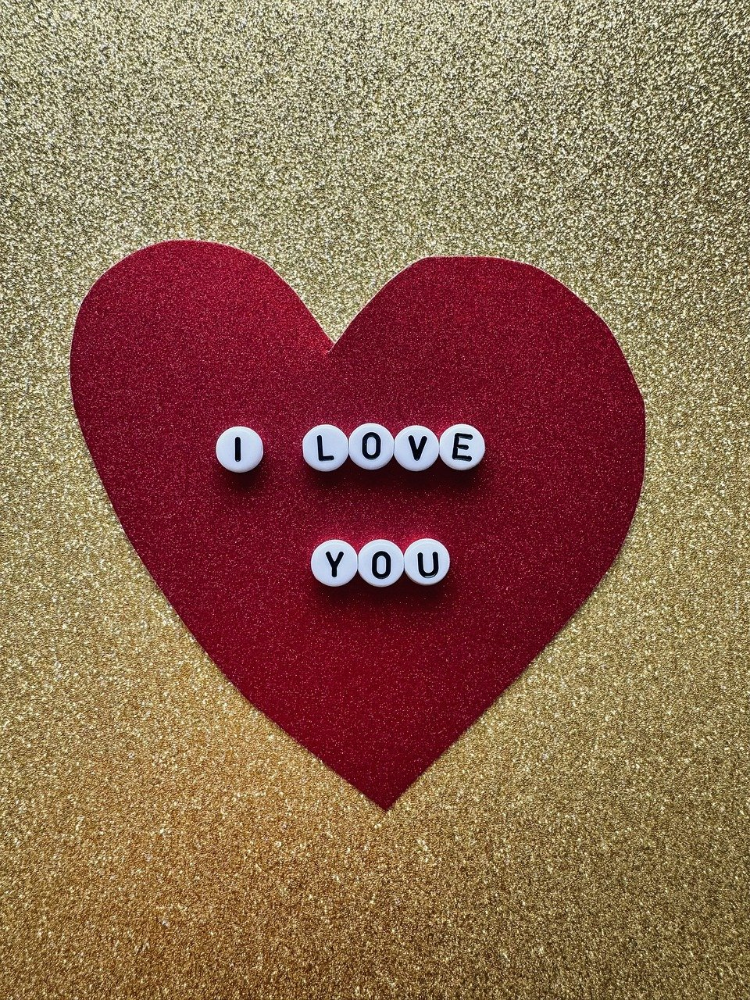

Gifts

There are certain gifts that are associated with Valentine's Day. Some of which include: chocolate, roses, teddy bears, candy, and cards. These are gifts that we see fill the stores annually during this time of year. In my opinion, Valentine's Day is not about gifts, but rather about showing your care and appreciation for others. Although, my favorite gift to recieve on Valentine's Day is flowers. Specifically, I enjoy roses the most since they are symbolic of love and affection.
Affection

A popular way that people show affection on Valentine's Day is through words. Sometimes words are more meaningful than gifts. People often express their appreciation for their relationships by writing a card to give to their significant other. It is common to see phrases such as I love you
or the infamous roses are red, violets are blue
. Although, I like to steer away from cliche wording when writing my cards.
Relationships

Relationships are what gives Valentine's Day its value. Without relationships, the holiday would be meaningless. This holiday does not just have to be celebrated with a significant other, but it can be celebrated with any relationship. This holiday can be celebrated with parents, grandparents, children, brothers, sisters, or even pets. We can not forget our furry friends. Dogs, cats, and other pets are important relationships too, so we can't forget them on Valentine's Day! Some of the most important relationships that I have in my life include my parents, my brothers, my two best friends, and my cousin. My brother is my best friend, and my cousin is the sister I never had.